This vignette shows what each plot function in bayesEfron is for and how to read the result. A fit contains a posterior distribution for \(g\), the distribution of effects, and for the effect of every site, and most questions about it are easier to answer from a plot than from a table.
Each plot function returns a ggplot object that you can
change with ggplot2 functions. The one exception is
plot_mcmc(type = "pairs"), which returns the grid of plots
that bayesplot makes.
For most examples we use two fits stored in the package:
krw_fit, the callback gaps of 97 firms from
vignette("bayesEfron"), and twin_towers_fit,
1,500 simulated sites with known true effects from
vignette("twin-towers").
firms <- krw_fit
sims <- twin_towers_fit
truth <- twin_towers$theta_trueThe distribution of effects
plot_g() shows what the distribution of true effects
looks like and how well the data determine it. The curve is the
posterior mean of the density of \(g\),
and the pointwise band around it contains the density with the stated
probability at each value. Below, observed puts a histogram
of the estimates under the curve, normal puts a normal
distribution fitted to the same estimates over it, and
scale = 100 gives percentage points.
plot_g(firms, observed = "histogram", normal = TRUE, scale = 100)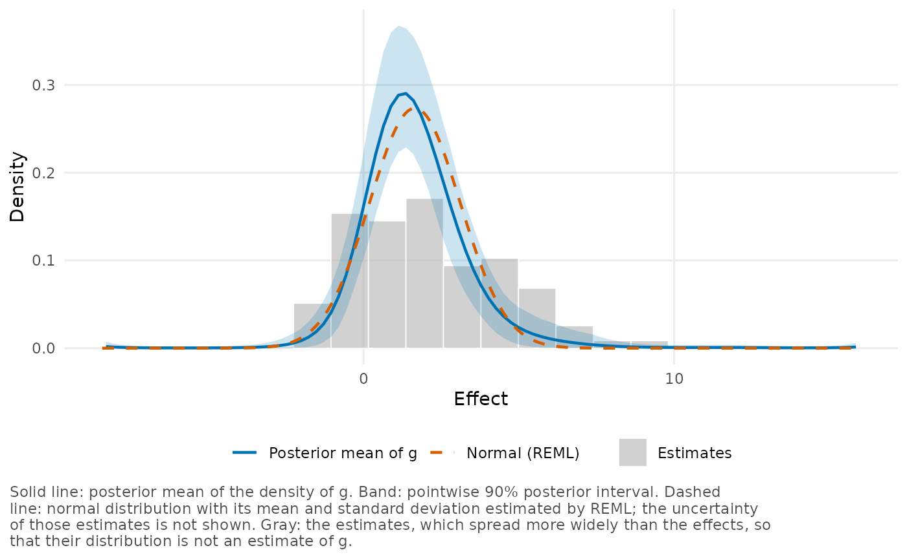
The histogram is wider than the curve because the estimates contain sampling error and the effects do not. Where the band is wide, the data do not determine the height of the density well.
Proportions of sites are easier to read from the distribution
function, so next we set type = "cdf". Setting
inner_level adds a second, narrower band.
plot_g(firms, type = "cdf", inner_level = 0.5, scale = 100)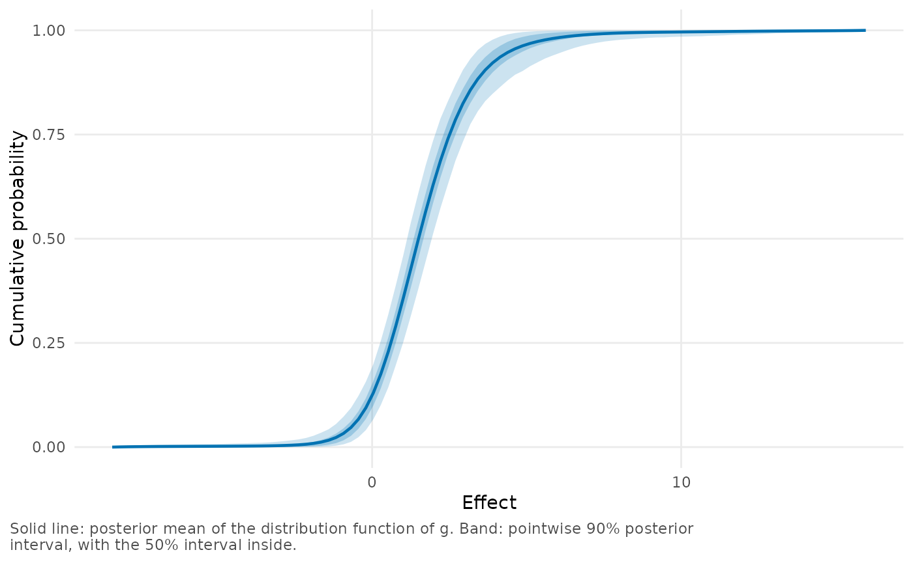
The height of the curve at a value is the proportion of firms with a gap below it. Three more arguments add to the plot:
-
draws = 40adds 40 posterior draws of \(g\) to its posterior mean and band. -
truthadds the true effects of simulated data. -
compareputs other estimates of the distribution over this one, from other fits or from other software.
The sites
Caterpillar plot
A caterpillar plot from plot_sites() shows the posterior
mean of each site with a 50% and a 90% interval, and the estimate as an
open circle. Use it to see which sites have the largest and the smallest
effects, and how certain that ordering is.
plot_sites(firms, n_extreme = 10, scale = 100)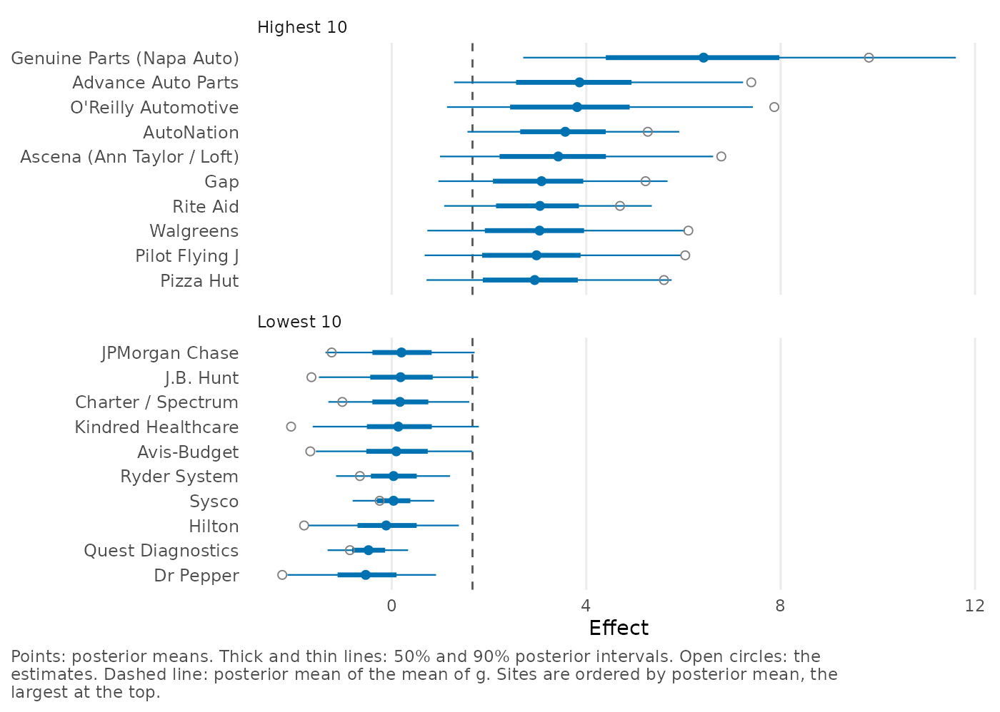
n_extreme selects the sites at the two ends, and
sites selects sites by name or position. Without either,
every site is plotted: labeled when there are at most 100, and as thin
lines when there are more.
plot_sites(sims)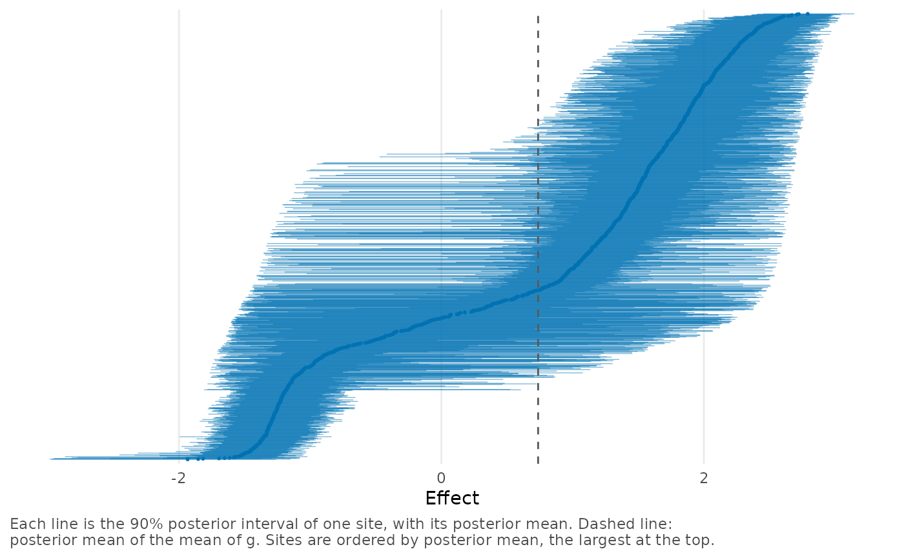
Shrinkage plot
plot_shrinkage() shows how far the model moves the
estimates by plotting the posterior mean of every site against its
estimate. Points on the diagonal have not moved.
plot_shrinkage(firms, scale = 100)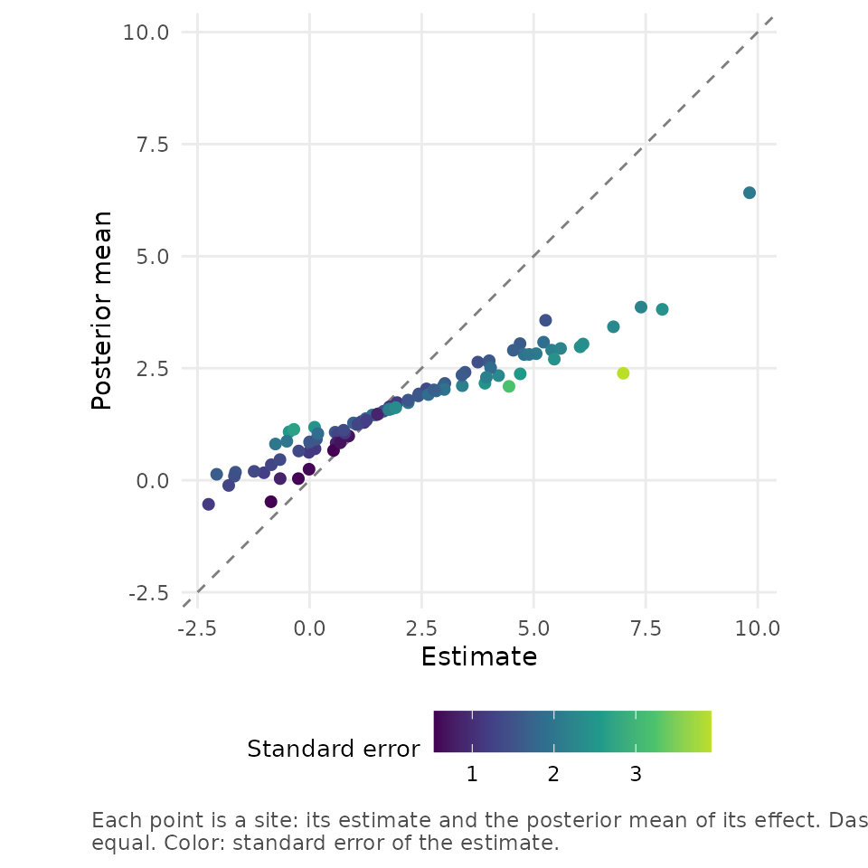
With style = "arrows", each site is an arrow from the
estimate to the posterior mean, at the height of its standard error.
This suits a small number of sites, such as the 19 teacher expectancy
studies in the stored fit raudenbush_fit.
plot_shrinkage(raudenbush_fit, style = "arrows")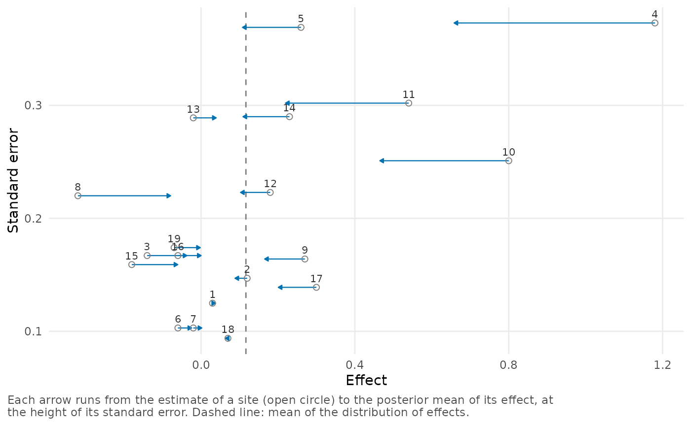
Exceedance probabilities
When the question is which sites have an effect above a threshold,
plot_exceedance() plots, for each site, the posterior
probability that its effect is above the threshold. cutoff
marks a probability and counts the sites that reach it. For many sites,
the probabilities are plotted as a curve.
plot_exceedance(sims, cutoff = 0.9)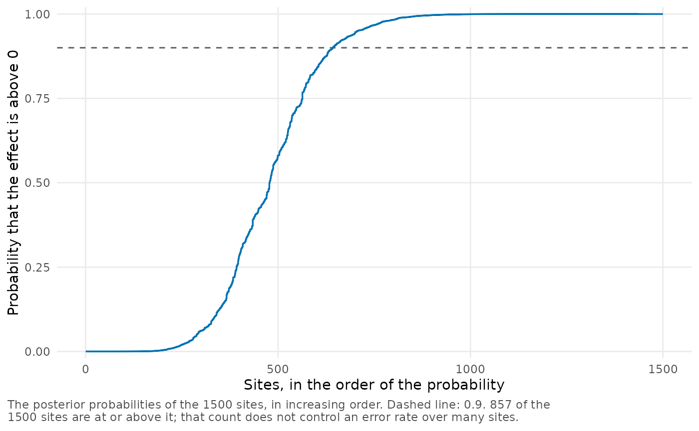
The caption notes that the count controls no error rate over the sites, which is easy to forget when a list of sites is made from it.
The posterior of one site
plot_site_posterior() plots the whole posterior
distribution of a site, with the two things that it is made from: the
likelihood of the estimate and the estimate of \(g\).
plot_site_posterior(sims, sites = c(268, 304))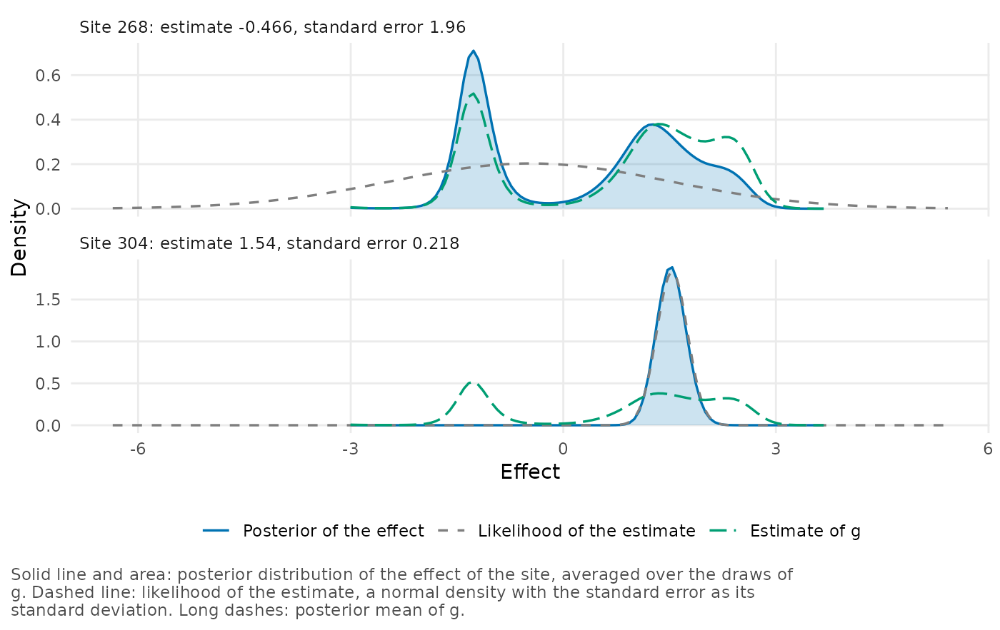
The first site has an imprecise estimate between the two groups of simulated effects, and its posterior distribution has two modes. A mean and an interval would hide that.
Checking a fit
Sampler and grid diagnostics
plot_diagnostics() plots what diagnose()
reports, so you can check two things at once: whether the sampler
converged, and whether the grid suits the fit. R-hat and the effective
sample sizes of the quantities that the sampler records are shown in
blocks against their thresholds, with two more panels about the
grid.
plot_diagnostics(firms)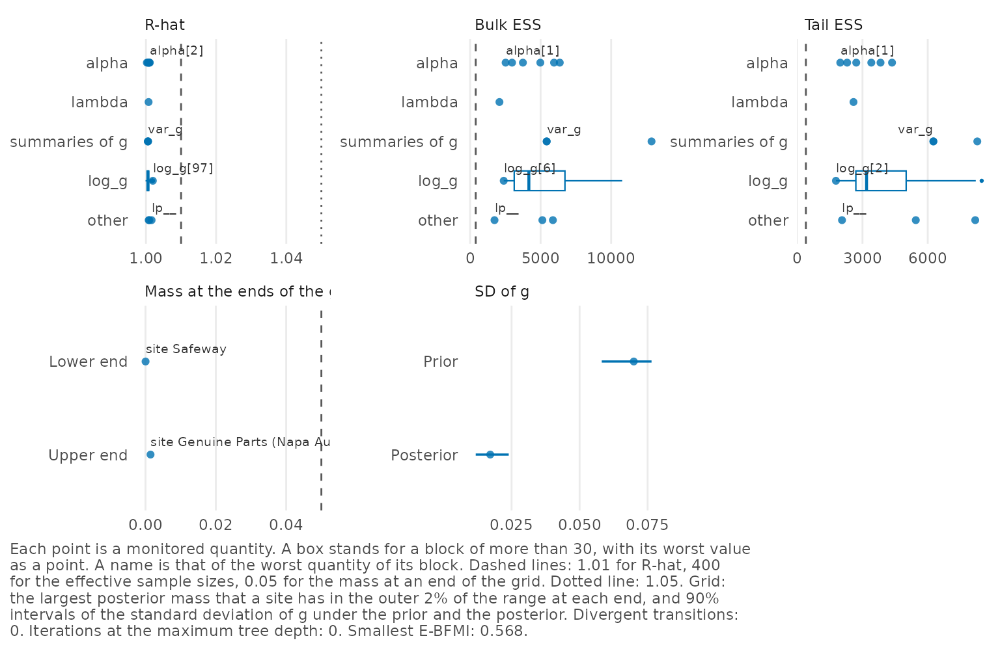
Points to the right of the dashed line in the first panel (R-hat), or
to the left of it in the next two (effective sample sizes), would be
quantities that miss their thresholds. There are none here. The caption
gives the numbers of divergent transitions and of iterations at the
maximum tree depth, and vignette("diagnostics") explains
each check.
Posterior predictive check
A posterior predictive check with plot_ppc() shows
whether the model reproduces the estimates. The check compares each
estimate with the distribution that the fitted model gives it, through
the probability of a smaller estimate at that site (the probability
integral transform, PIT). If \(g\) were
known, these values would be uniformly distributed between 0 and 1, and
the line shows how far the values of the fitted model are from that.
plot_ppc(firms)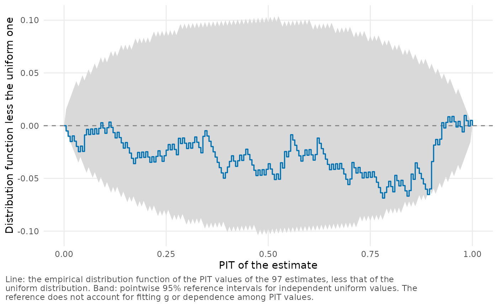
The band is the reference for independent uniform values, but it does
not allow for the fitting of \(g\). See
vignette("diagnostics") for how to read it.
Pareto k values
Leave-one-out cross-validation approximates the fit that would result
without each site, and the Pareto k of a site measures how good that
approximation is. To check that the approximation is reliable for every
site, plot the values with plot_loo(). A line marks the
value above which the result for a site should not be trusted, and the
sites above it are labeled. See vignette("diagnostics") for
more.
plot_loo(firms)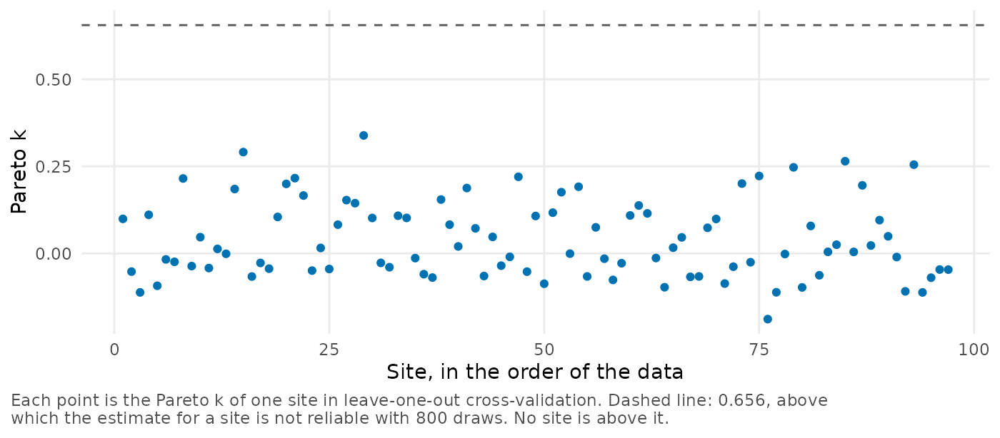
Grids and grid comparisons
The plot() method for a grid, or
plot(fit, type = "grid") for the grid of a fit, shows where
the grid lies in relation to the data: the spline functions, the knots
and the grid points over the estimates.
plot(sims, type = "grid")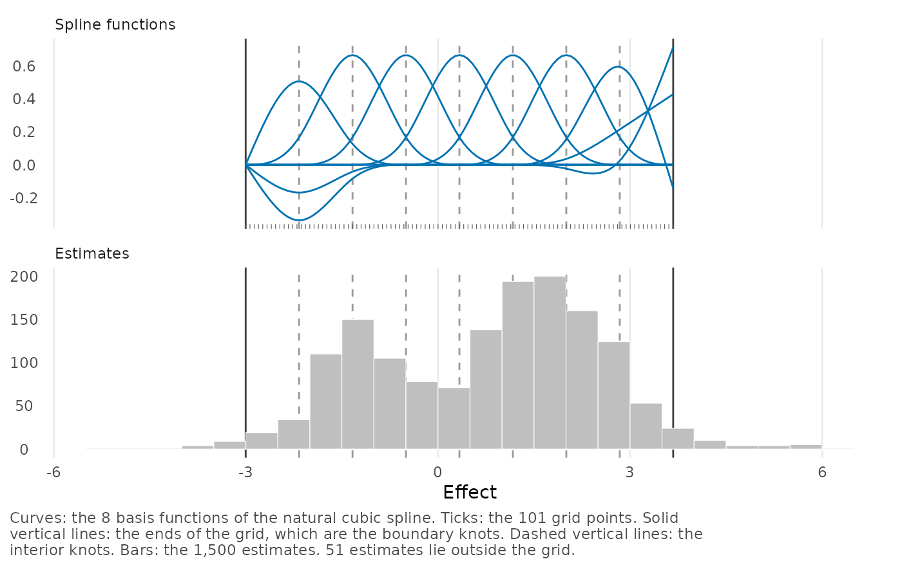
The limits of this grid are well inside the range of the estimates
because the default grid_method narrowed it.
To see what changes when the grid changes, plot a comparison from
compare_efron_grids(): the specifications appear one under
the other. Here we load a stored comparison of three ranges for the 19
teacher expectancy studies.
comparison <- readRDS(system.file("examples", "raudenbush_ranges.rds",
package = "bayesEfron"))
plot(comparison)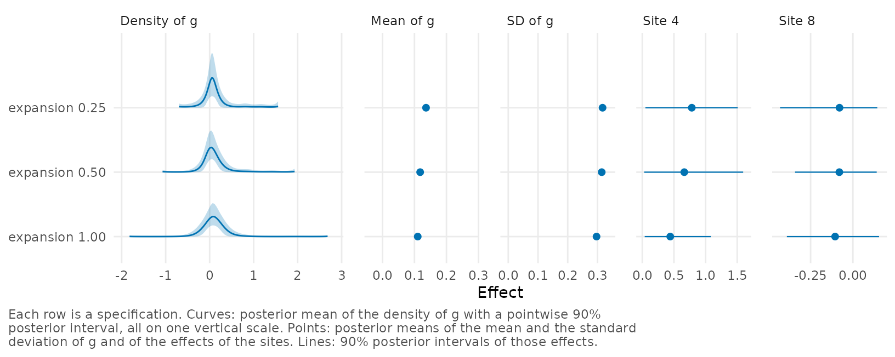
vignette("twin-towers") discusses the first of these
plots and vignette("teacher-expectancy") the second.
Simulated data
With simulated data, plot_recovery() shows how close a
fit comes to the known effects. It plots the intervals of the sites with
the true effects and marks the sites where the true effect is outside.
Only 150 sites are shown, and seed fixes the random
choice.
plot_recovery(sims, truth, seed = 1)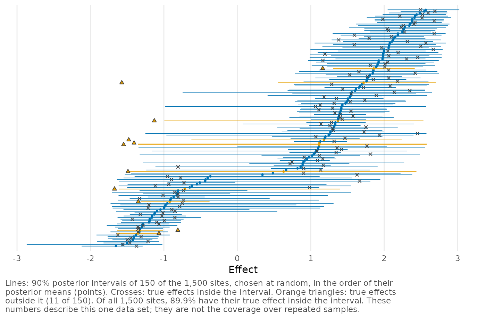
Setting type = "calibration" shows the proportion of
true effects inside the intervals at every level from 5% to 95%, and
type = "scatter" plots the posterior means against the true
effects.
Common arguments
Every plot function takes the fit first, and a few arguments work the same way wherever they apply:
-
scalemultiplies the effect values. For example,scale = 100turns differences in probabilities into percentage points. -
levelsets the probability of posterior intervals and bands. Inplot_ppc()it sets the level of the independent-uniform reference intervals. -
sitesandhighlighttake positions or labels.
Calling plot() on a fit with a type runs
the same functions by name, so
plot(firms, type = "g", scale = 100) is the same as
plot_g(firms, scale = 100).
Customizing a plot
A plot has no title, but its caption says what the lines and bands
are. You can set both, and add layers, as with any other
ggplot object:
plot_g(firms, scale = 100) +
ggplot2::geom_vline(xintercept = 0, linetype = "dotted") +
ggplot2::labs(title = "Callback gaps of 97 firms",
x = "White minus Black callback rate (percentage points)")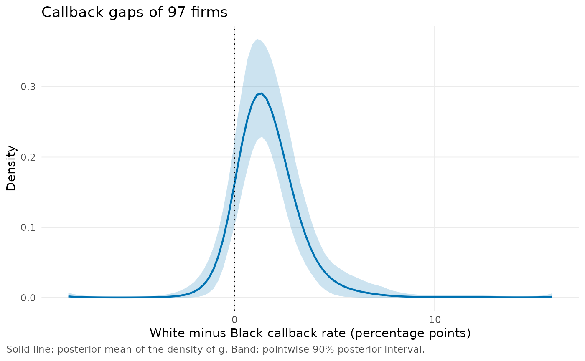
Making your own plots
The numbers in the plots of \(g\)
and of the sites are also available from three functions. The densities,
distribution functions and probabilities of \(g\) come from g_summary(), the
means and intervals of the sites from site_summary(), and
the probabilities of exceeding a threshold from
exceedance_prob(). To make a plot that the package does not
have, start from these functions:
head(g_summary(firms, type = "cdf", scale = 100), 3)
#> value mean lower upper
#> 1 -8.289621 0.0002198804 2.447210e-07 0.0008876288
#> 2 -8.048199 0.0005935610 7.766047e-07 0.0024197491
#> 3 -7.806777 0.0008606321 1.298678e-06 0.0034986411
site_summary(firms, sites = c("KFC", "Walmart"), scale = 100)[, 1:8]
#> site label estimate se mean sd lower upper
#> 1 2 KFC 2.2 1.530472 1.786494 1.052594 0.12271869 3.581179
#> 2 65 Walmart 7.0 3.919826 2.386823 1.744476 0.04493205 5.523267MCMC plots with bayesplot
Trace plots, rank plots and the other plots of the Markov chains come
from bayesplot, and plot_mcmc() passes the draws of a fit
to it. We show a rank plot, in which the draws of all the chains are
ranked together and each line counts the ranks of one chain in 20 bins.
Chains that sample the same distribution give lines that overlap around
a common level, as they do here.
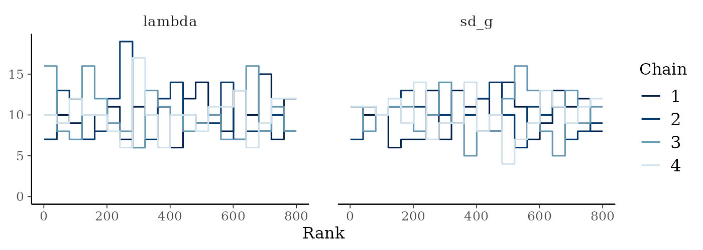
The type argument can be "trace",
"rank", "dens", "pairs" or
"energy", and vignette("diagnostics") shows a
trace plot. For anything else, pass the draws and the sampler’s
quantities to bayesplot yourself:
bayesplot::mcmc_areas(firms$draws, pars = c("mean_g", "sd_g"))
bayesplot::mcmc_nuts_divergence(bayesplot::nuts_params(firms),
bayesplot::log_posterior(firms))Note that the stored fits are thinned to 1 draw in 15, so their trace
plots show 200 draws for each chain, whereas the sampler diagnostics in
plot_diagnostics() are computed from the whole run. The
energy plot compares each iteration with the one before it and is
available only for a fit that stores every iteration. See
vignette("diagnostics") for the call.